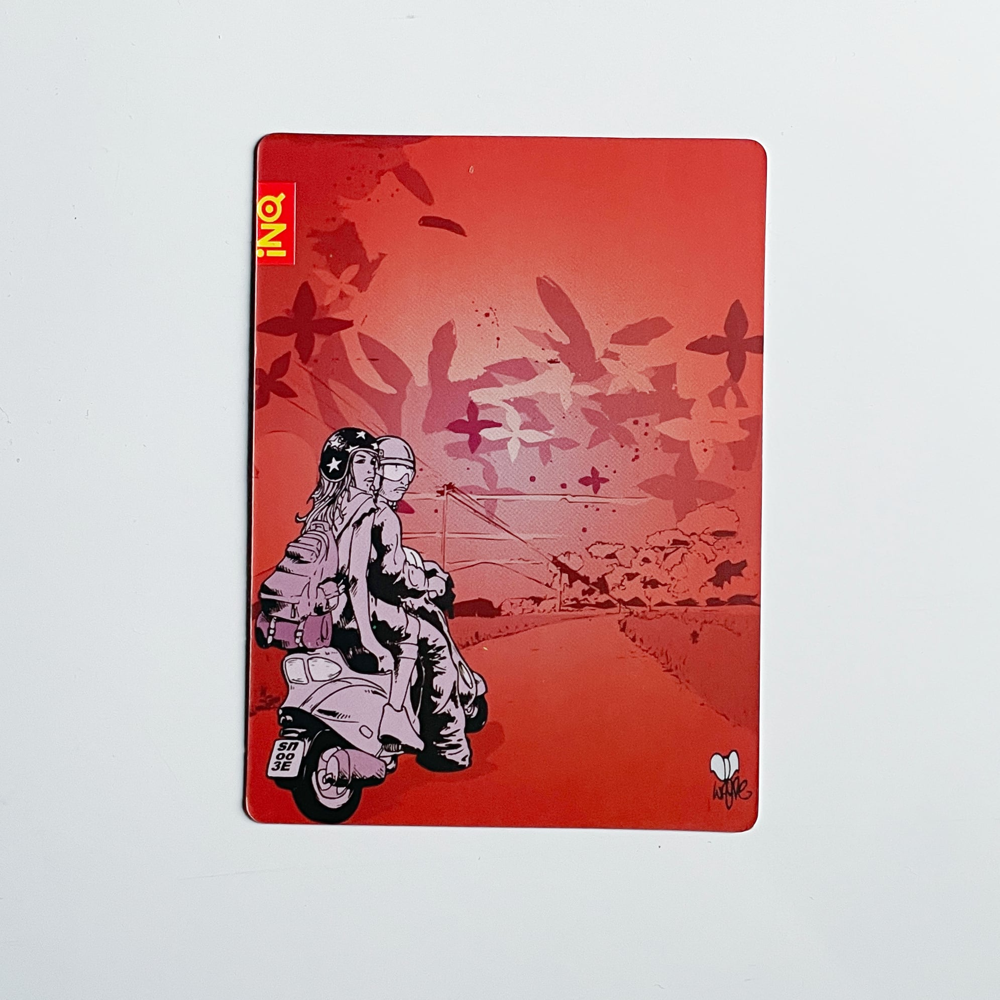
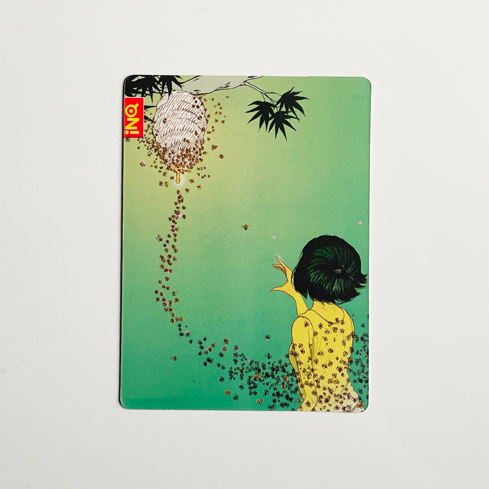
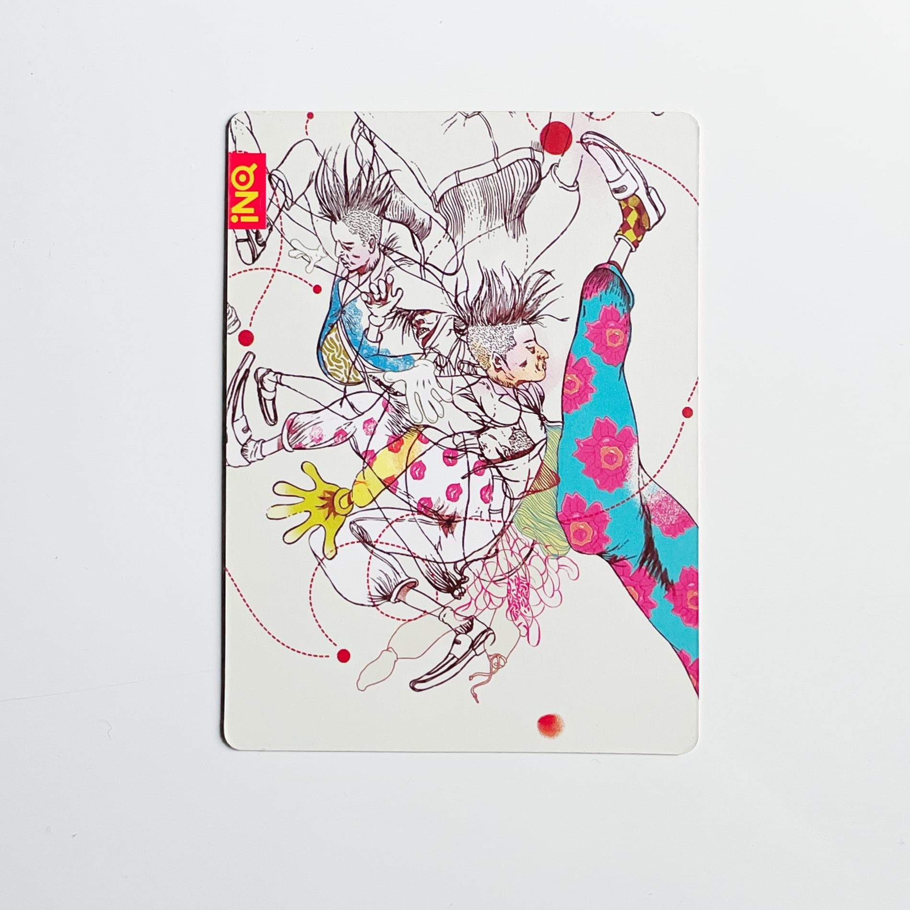
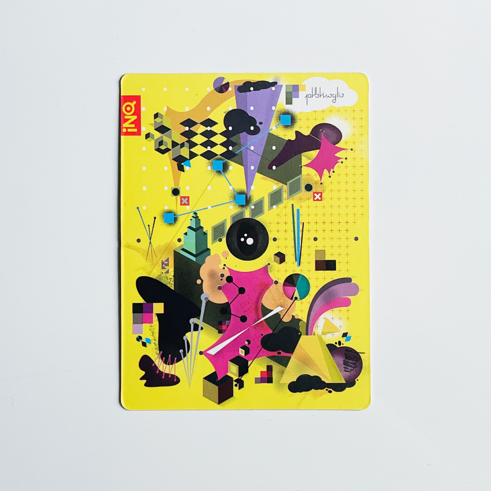
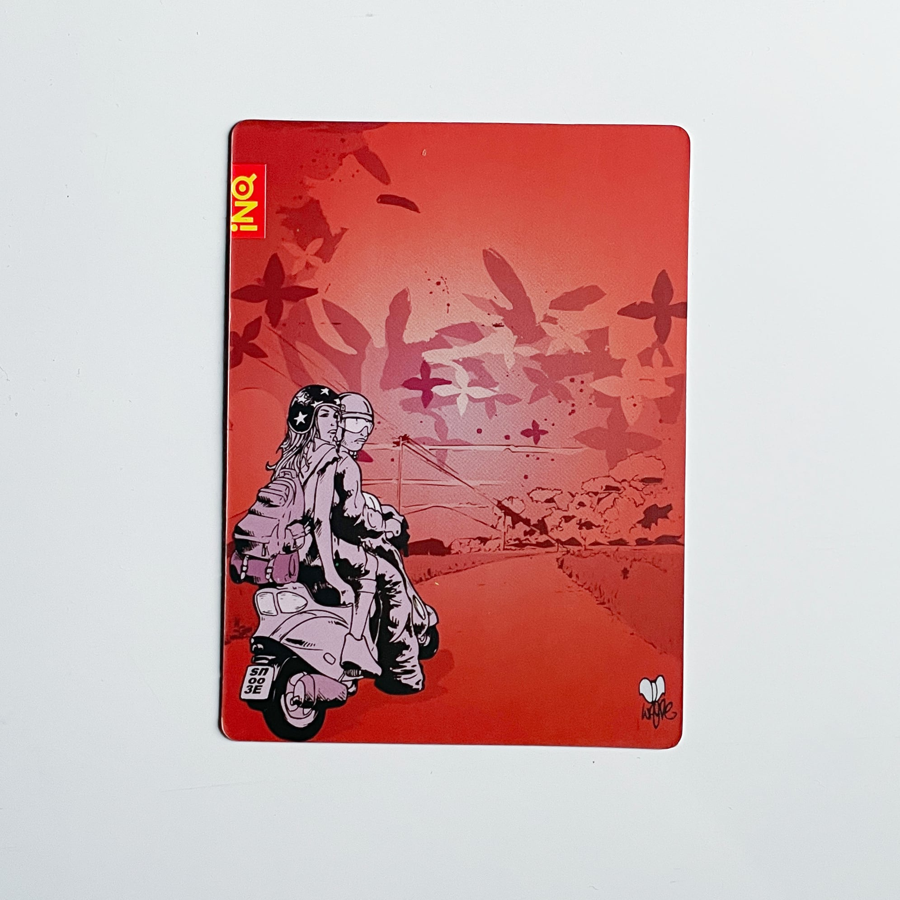
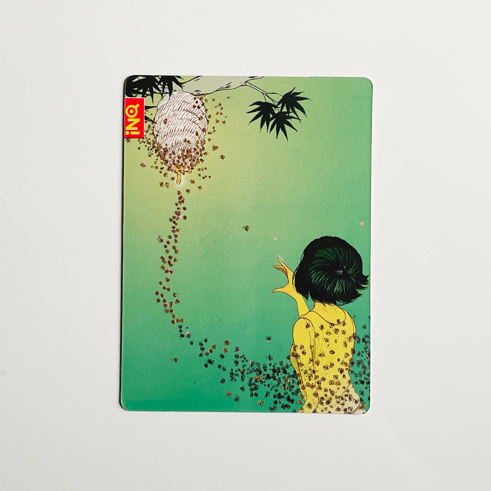
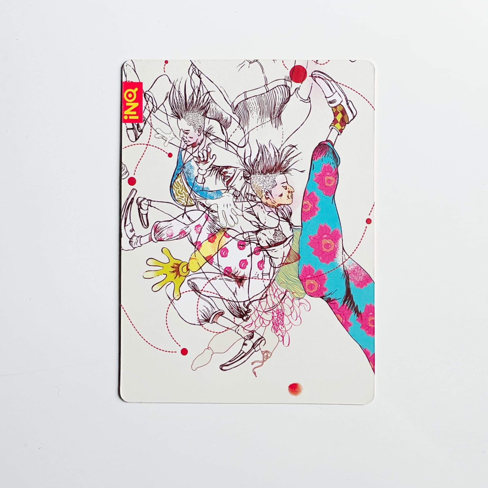
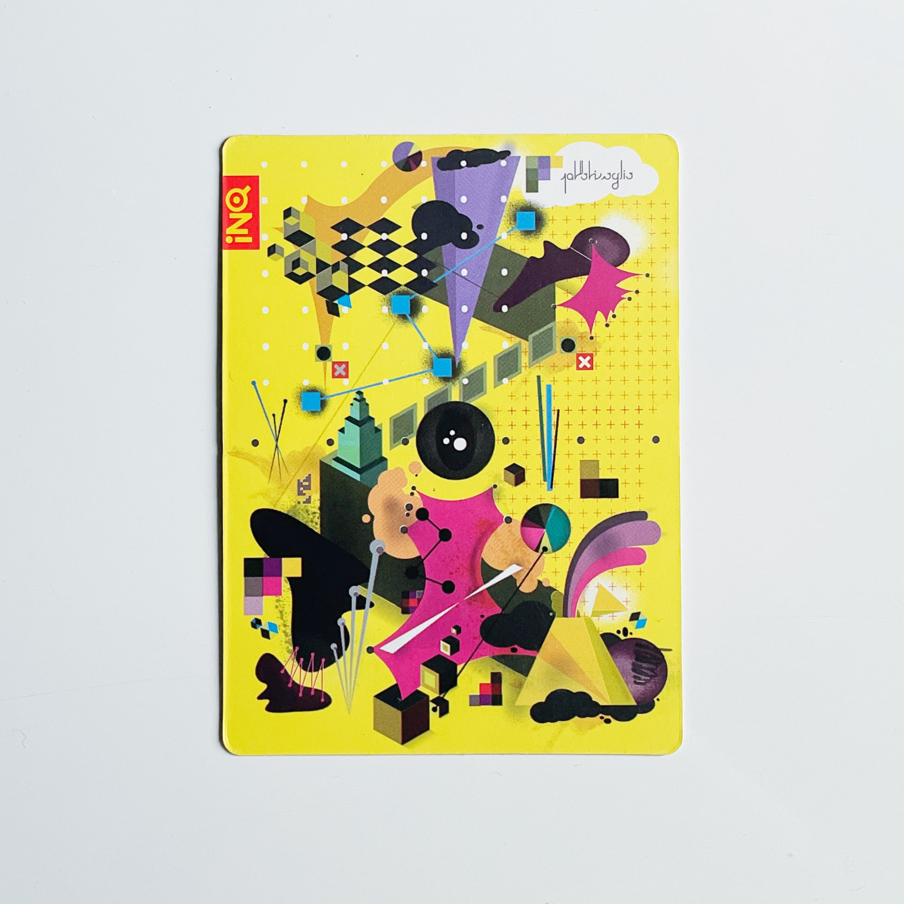

Uploaded here is the collection of artwork with texts on the alternate side. Artwork rediscovered after social-testing phase.
Discovered online a page for the INQ1(wikipedia.org)
< back to Homepage of Kai online
 
